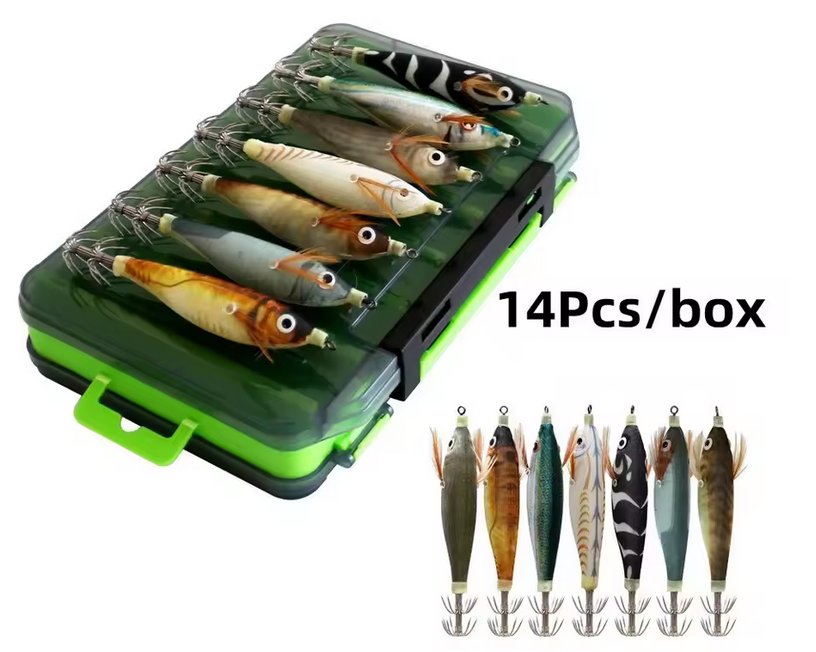

¿Vale la pena este pack de eging tan barato? Analizamos su rendimiento real.
Esta caja de 14 señuelos para calamar es una opción muy interesante si buscas un set variado, económico y listo para usar. Incluye diferentes modelos con acabado realista y efecto luminoso, pensados tanto para pesca diurna como nocturna.

🔥 ¿Por qué elegir este pack?
- ✔ 14 señuelos incluidos: variedad total para cualquier situación.
- ✔ Efecto Glow: esencial para pesca nocturna y aguas tomadas.
- ✔ Anzuelos dobles: buena calidad de clavada para su precio.
- ✔ Caja de transporte: rígida, ventilada y muy cómoda.
Características técnicas
- Peso: 9 gramos (Ideal para zonas poco profundas o puertos).
- Tamaño: 10 cm (Equivalente a un 2.5/3.0 aproximado).
- Caja: Incluida, con cierres de seguridad.
Veredicto Egis Low Cost
Es un pack imbatible para principiantes o para aquellos que pescan en zonas con muchas rocas donde el riesgo de pérdida es alto. No tienen el acabado de un Yamashita, pero por el precio de uno de marca, aquí tienes catorce.